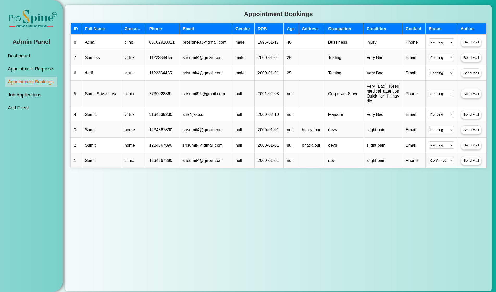
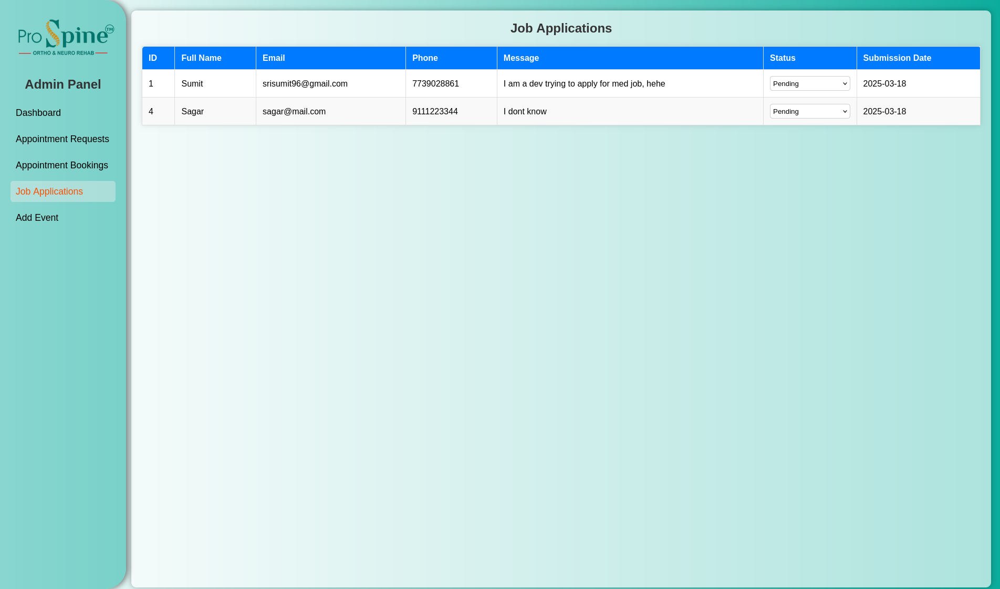
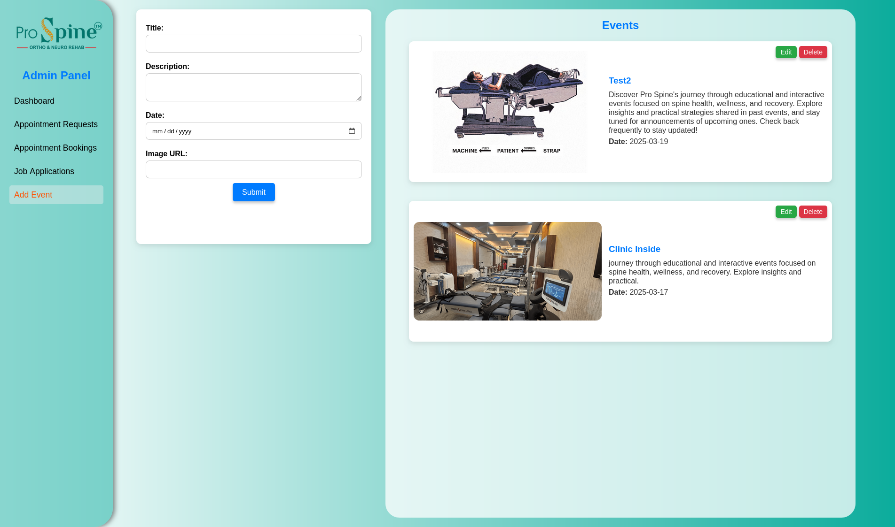
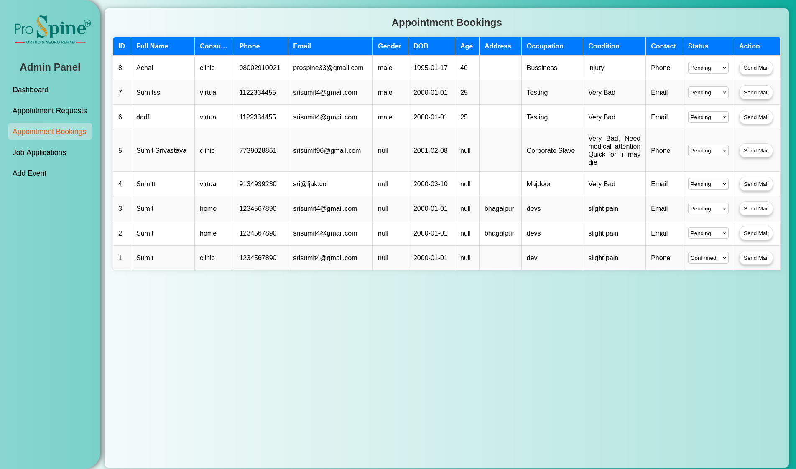
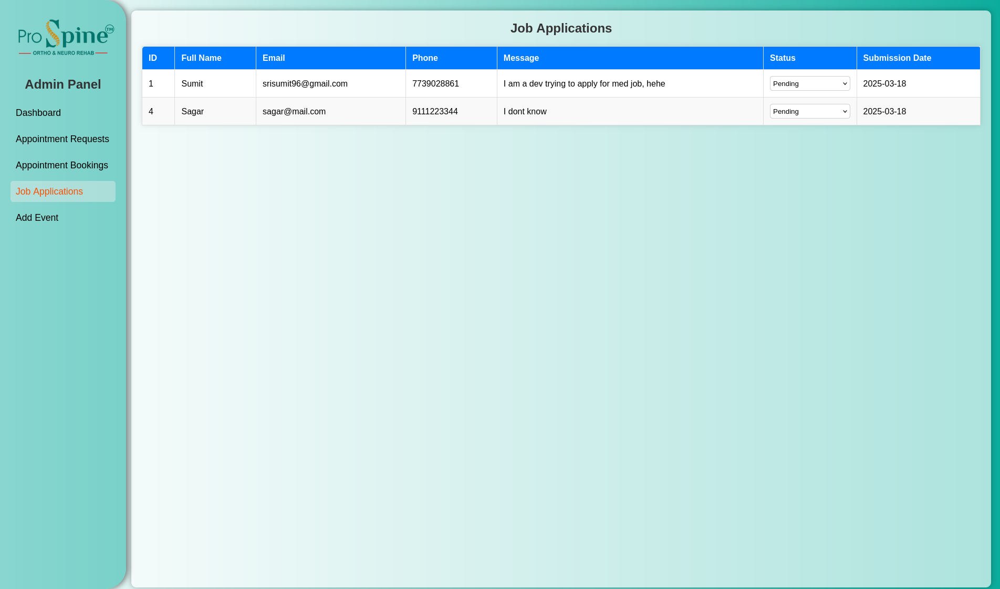
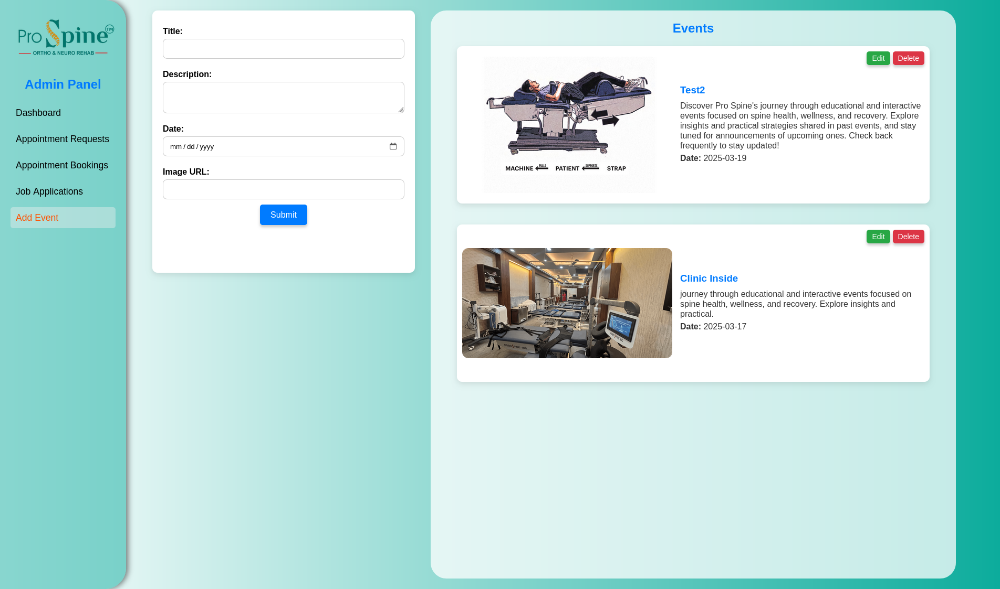

Pro Spine - Overview
Prospine is a modern and minimal static website designed for a prominent spinal specialist to
professionally present their profile, expertise, and services.
The goal of this project was to create a sleek, mobile-responsive, and informative platform that
builds trust and provides potential patients with all the necessary details at a glance.
The website includes sections such as doctor introduction, areas of specialization, treatments
offered, patient testimonials, and contact information all designed to enhance the user
experience and promote credibility.
Built with performance and simplicity in mind, Prospine eliminates clutter and focuses on what
matters most: clear communication, fast loading, and elegant visual appeal.
Duration: 4 weeks
Client: Dr. Pranav Kumar
Tools: HTML, CSS, JS, PHP, MySQL
The goal was to create a professional, responsive, and SEO-optimized website to establish a
digital presence for the clinic and enable patient engagement.
Key Features
A well-structured platform designed to provide a seamless experience for both patients and
doctors.
Patient-Focused Landing Page
The front-facing interface is designed with simplicity and clarity in mind, ensuring easy
navigation.
- Comprehensive Spine Health Information: Educates users with
well-researched medical content.
- Intuitive & Clean UI: Designed to minimize distractions and guide users
efficiently.
- Fully Mobile-Responsive: Ensures accessibility across desktops,
tablets, and smartphones.
Seamless Appointment Booking
The platform simplifies the process of booking consultations, reducing administrative
overhead.
- Effortless Scheduling: Patients can book appointments using a simple
online form.
- Instant Confirmations: Users receive immediate feedback on their
booking status.
- Real-Time Status Updates: Patients can track their appointments and
receive notifications.
- Doctor’s Backend Management: Enables efficient tracking and handling of
all appointments.
Dedicated Doctor’s Admin Panel
A powerful backend dashboard that helps doctors and administrative staff manage key aspects
efficiently.
- Appointment Dashboard: View, approve, or decline patient requests with
a few clicks.
- Blog Management: Publish informative articles to educate and engage
patients.
- Event Management: Easily announce medical workshops, health seminars,
and other events.
- Secure & Role-Based Access: Ensures only authorized personnel can
access or modify data.
Design & UI
The visual presentation of Prospine was crafted with a focus on professionalism, clarity, and
accessibility. Every design decision was made with the end-user in mind.
Modern Aesthetic
- Clean Layouts: Minimalist design with well-structured sections to avoid
clutter.
- Consistent Color Palette: Calming medical tones (teal, white)
that reflect trust and expertise.
- Typography: Elegant, easy-to-read fonts to ensure smooth readability
across devices.
Responsive & Accessible
- Mobile-First Approach: Built to work flawlessly on smartphones,
tablets, and desktops.
- Touch-Friendly Elements: Buttons and forms are easy to tap on mobile
devices.
- Accessibility: Contrast-optimized design and clear navigation paths for
users of all abilities.
User-Centered Experience
- Guided User Flow: Homepage and CTA elements lead users toward booking
an appointment or exploring spine care content.
- Feedback Mechanisms: Confirmation messages and smooth animations for
form submissions and page transitions.
- Minimal Distraction: Content-first strategy with clear emphasis on what
matters most to patients and admins.
Technology Stack
Built with efficiency and simplicity in mind, Prospine leverages a lightweight and scalable stack
tailored for a smooth user and admin experience.
🖥️ Frontend
HTML5 & CSS3: For structured markup and styling, ensuring SEO and
accessibility.
Vanilla JavaScript: Handles dynamic UI behavior, like navigation, form
transitions, and scroll effects.
Responsive Design: Built mobile-first to ensure a seamless experience
across all screen sizes.
🛠️ Backend
PHP: Manages form submissions, content updates, and authentication logic
for the admin panel.
MySQL: Handles storage and retrieval of appointments, blog entries, and
events with relational integrity.
Security: Input validation, admin-only access, and basic sanitization
for safe data handling.
☁️ Deployment
Hosting: Live on a shared server with cPanel for efficient file and
database management.
Deployment Tools: FTP access and built-in file manager for updates and
content uploads.
Maintenance: Easy manual version tracking and regular backups ensure
site stability.
Deployment & Hosting
Prospine’s deployment is designed with reliability, scalability, and user accessibility in mind.
Here’s how it’s been implemented:
🌐 Hosting Strategy
The site is hosted on a reliable shared hosting platform with SSL enabled, ensuring
secure and fast access. Backend and frontend are hosted together for streamlined
updates.
🔒 Security & Access
SSL encryption secures all traffic. The admin panel uses role-based access control to
prevent unauthorized entries. Form submissions are validated to block malicious
attempts.
🧠 Deployment Flow
Updates are pushed via Git. Upon merging into the main branch, deployment is triggered
manually for control and stability checks before going live.
🚀 Performance & SEO
Images are optimized, content is lazy-loaded, and the layout is responsive. Meta tags,
alt attributes, and clean URLs improve SEO visibility and ranking.
🌍 Domain & Availability
The site uses a custom domain with 99.9% uptime, thanks to DNS optimizations. It includes
robots.txt, sitemap.xml, and is indexed for search engines.
📊 Analytics & Monitoring
Integrated with Google Analytics to track visitor behavior, page views, and engagement.
Monitoring tools notify of downtime or performance dips for quick resolution.

 




